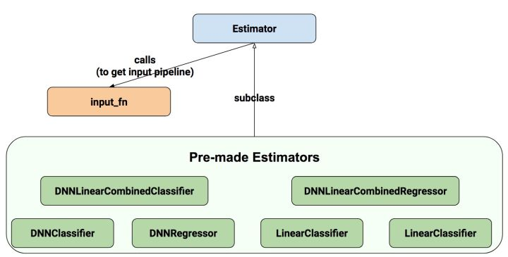
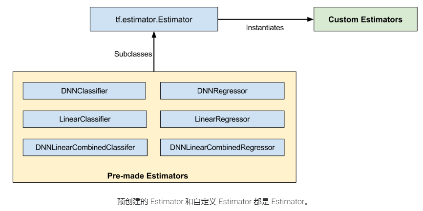
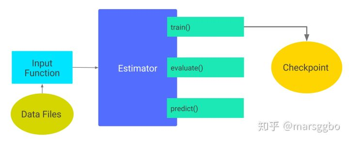

Estimator.



1. 输入函数
输入函数返回dataset
def train_input_fn(features, labels, batch_size): """An input function for training 用于训练的输入函数 Args: 特征 标签 batch_size Returns: tf.data dataset """ # 将输入转换为数据集。 dataset = tf.data.Dataset.from_tensor_slices((dict(features), labels)) # 随机播放，重复和批处理示例。 dataset = dataset.shuffle(1000).repeat().batch(batch_size) # 返回管道读取的结束端。 return dataset.make_one_shot_iterator().get_next()
2. 训练
3. 评估
4. 预测
5. 模型保存
tf.estimator.export
5.1. serving_input_receiver_fn
训练过程中 input_fn()用于提供数据输入，类似地，预测阶段输入数据由 serving_input_receiver_fn提供。
5.1.1. 功能
serving_input_receiver_fn 以下功能：
- 将预测需要输入数据的placeholder添加到graph中。 （input）
- 添加额外的用于将输入数据格式转换为feature Tensors格式的op。（receiver）
- 决定Save Model的签名 （signature）
当编写 serving_input_receiver_fn时，需要提供一个
5.1.2. 编写函数
def serving_input_receiver_fn(): """An input receiver that expects a serialized tf.Example.""" # 1. 模型的输入数据 spec feature_spec = { 'foo': tf.FixedLenFeature(...), 'bar': tf.VarLenFeature(...) } # 2. 作为服务的模型接收的序列号 tensor serialized_tf_example = tf.placeholder(dtype=tf.string, shape=[default_batch_size], name='input_example_tensor') # 3. 说明数据解析的方式 features = tf.parse_example(serialized_tf_example, feature_spec) # features={"foo":<tf.tensor..>} receiver_tensors = {'examples': serialized_tf_example} # receiver_tensors ={"examples":<tf.tensor..>} #4. 构建服务输入接收器 ServingInputReceiver=tf.estimator.export.ServingInputReceiver(features, receiver_tensors) return ServingInputReceiver
说明：
编写数据解析方式
数据解析方式通过字典定义
features={ "name_1":tensor_1 }
可以通过 tf.parse_example 指定输入的序列化数据格式，返回数据解析的字典
数据的约定spec 可以包括：
1. tf.FixedLenFeature
2. tf.VarLenFeature
3. tf.SparseFeature
# 1. 模型的输入数据 spec feature_spec = { "unique_ids" : tf.FixedLenFeature([], tf.int64), "input_ids" : tf.FixedLenFeature([MAX_SEQ_LENGTH], tf.int64), "input_mask" : tf.FixedLenFeature([MAX_SEQ_LENGTH], tf.int64), "segment_ids" : tf.FixedLenFeature([MAX_SEQ_LENGTH], tf.int64), } # 2. 作为服务的模型接收的序列化 tensor serialized_tf_example = tf.placeholder(dtype=tf.string,shape=[FLAGS.train_batch_size],name='input_example_tensor') features = tf.parse_example(serialized_tf_example, feature_spec) type(features) >>>dict features={ "unique_ids" : <tf.tensor ..>, "input_ids" : <tf.tensor ..>, "input_mask" : <tf.tensor ..>, "segment_ids" : <tf.tensor ..>, }
编写服务输入接收器 ServingInputReceiver
ServingInputReceiver 的定义可以
1. 直接通过实例化类定义
2. 通过函数定义
# 1. 直接通过实例化类定义 ServingInputReceiver=tf.estimator.export.ServingInputReceiver(features, receiver_tensors) type(feature) >>> dict type(receiver_tensors) >>> dict # receiver_tensors,feature 可自定义不同 # 2. 通过函数1定义 ServingInputReceiver=tf.estimator.export.build_raw_serving_input_receiver_fn(features)() # feature与receiver_tensors相同 # 3. 通过函数2定义 ServingInputReceiver=tf.estimator.export.build_parsing_serving_input_receiver_fn( feature_spec, default_batch_size=None )() ServingInputReceiver.feature >>> ServingInputReceiver.receiver_tensors >>> {'examples': <tf.Tensor 'input_example_tensor_2:0' shape=(?,) dtype=string>}
注意：当训练一个模型提供服务并在一个local server上使用Predict API，不需要parsing阶段，因为模型会接受原始特征数据。
即使你不需要parsing或者其它的输入预处理——也就是说，serving系统会直接feed相应的特征Tensors——你必须仍要提供一个serving_input_receiver_fn()，它会为特征Tensors创建placeholders，并将它们传进去。tf.estimator.export.build_raw_serving_input_receiver_fn可以提供该功能。
如果这些工具类不能满足你的需要，你可以自由地编写自己的serving_input_receiver_fn()。一种情况是，如果训练input_fn()合并提炼了一些预处理逻辑，在serving时必须重新被使用。为了减少training-serving交叉的风险，我们推荐你在一个函数中重新封装这样的处理逻辑，然后它可以被input_fn()和serving_input_receiver_fn()调用。
注意，serving_input_receiver_fn() 也会决定签名（signature）的input部分。也就是说，当编写一个serving_input_receiver_fn()时，你必须告知parser：期望什么签名（signatures）、如何将它们映射到你的模型所期望的输入。相反地，signature的output部分由模型来决定。